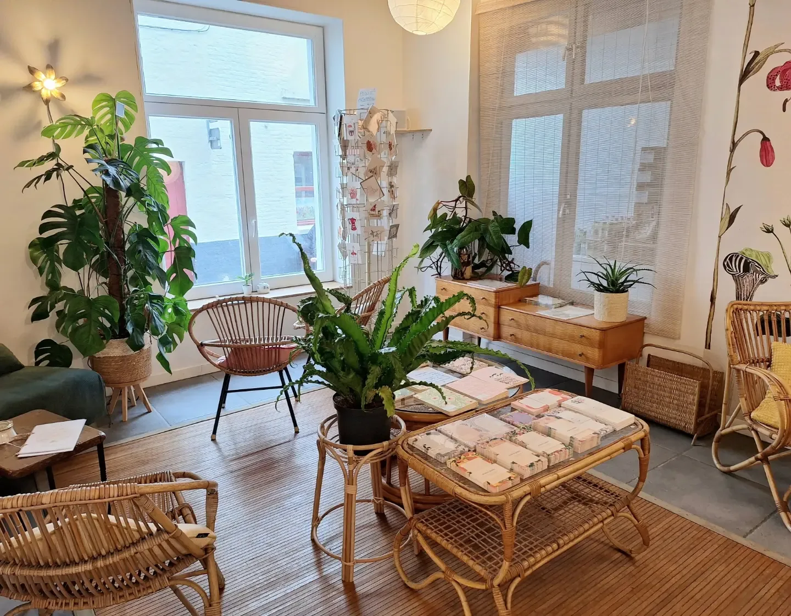
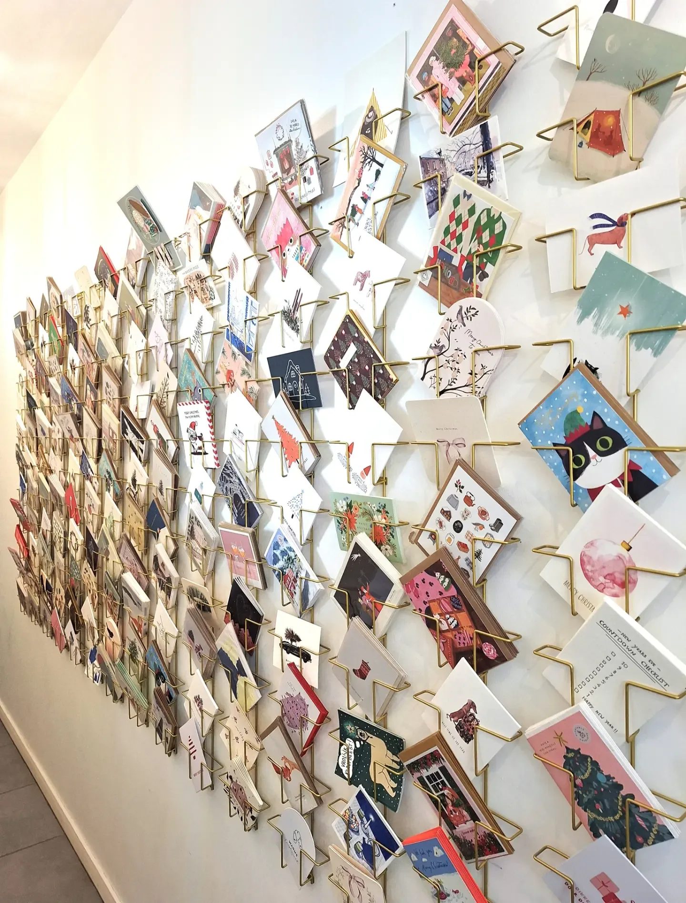
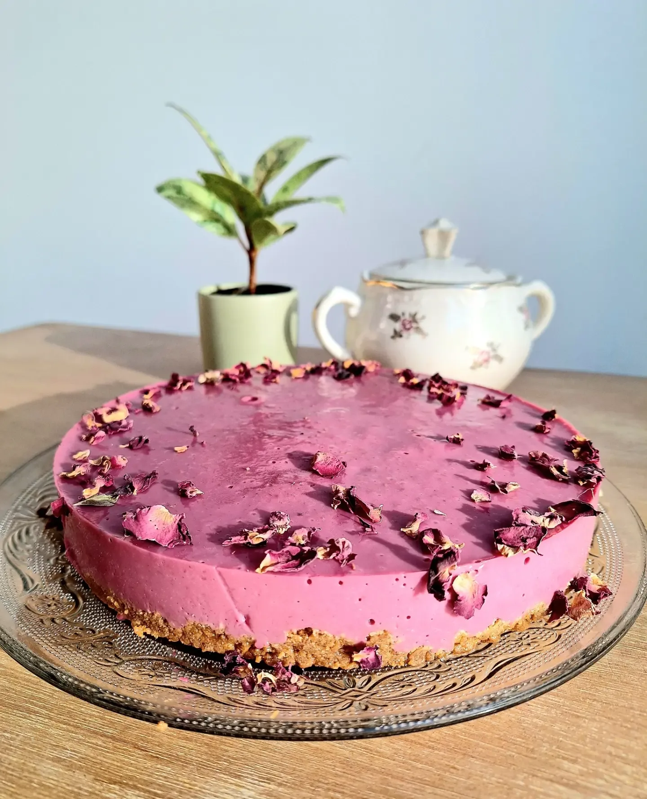
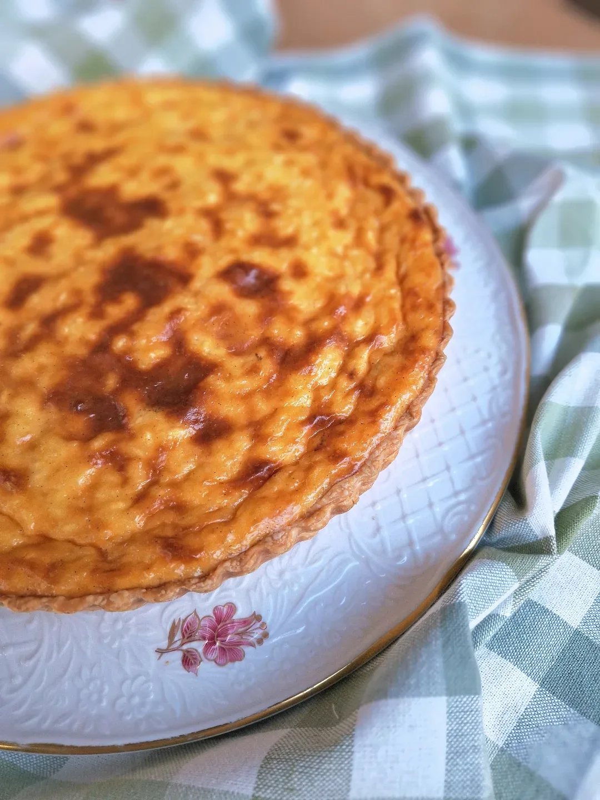
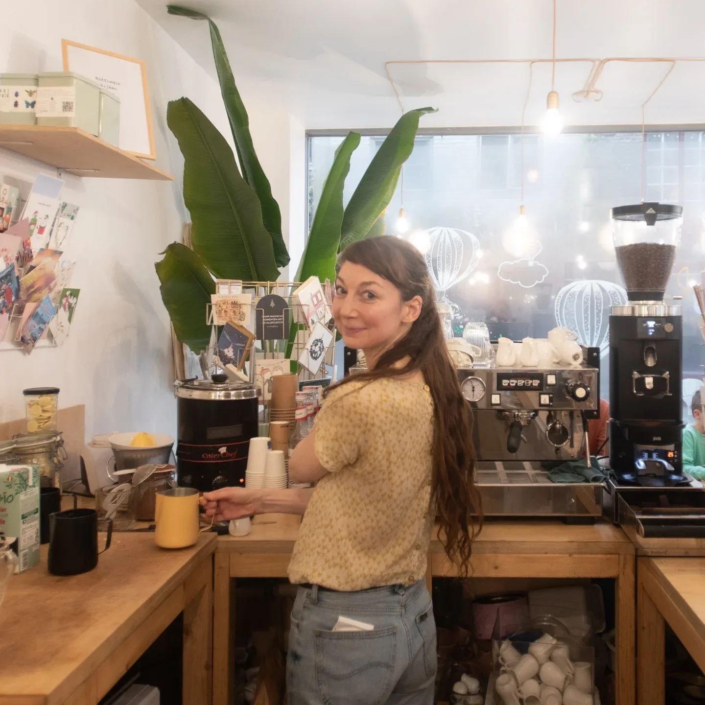
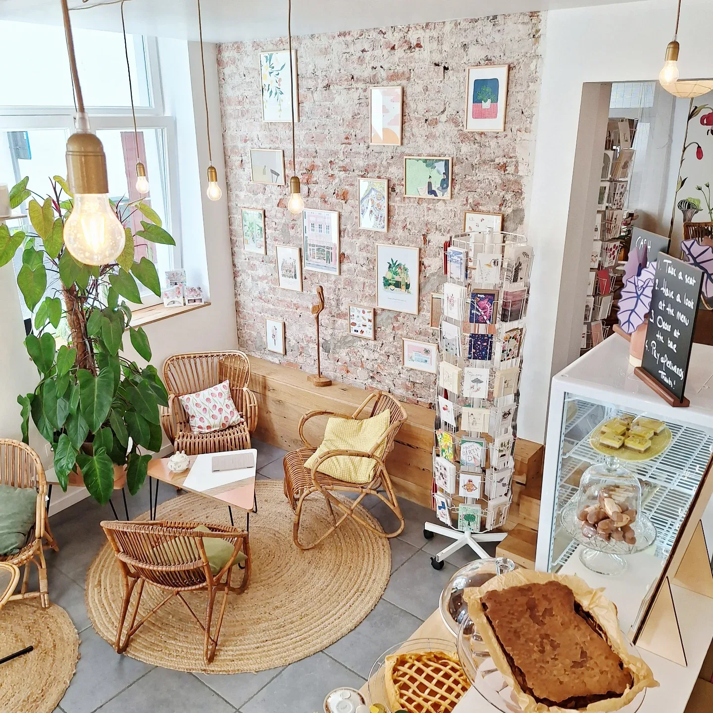

Koffie, taart en een kaartje dat ik voor je post.
Specialty koffie, thee en taart die ik zelf bak, tussen de planten en het rotan. Schrijf je hier een kaartje, laat het dan achter in het rek. Ik zorg dat het vertrekt.

4,9 op Google uit 202 reviews
Schrijf een kaartje. Ik post het voor jou.
Postbar is een koffiebar met een papierwinkeltje. Aan de muur hangen kaartjes van illustratoren, vaak ontwerpen die je niet snel ergens anders vindt. Je kiest er eentje, schrijft het aan tafel en laat het achter. Dat doe ik nu al zeven jaar.
- 1
Kies een kaartje
Voor een verjaardag, een bedankje of gewoon omdat je aan iemand denkt. Neem gerust je tijd aan de muur.
- 2
Schrijf het hier
Met een koffie of een thee erbij, aan een van de rotan tafeltjes.
- 3
Laat het achter in het rek
Adres erop, en ik zorg dat het op de post gaat. Jij hoeft er niets meer voor te doen.


Taart op bordjes van de brocante.
Het gebak maak ik zelf. De bordjes en schaaltjes waarop het komt, zoek ik op reis bij brocantezaakjes, tot ik er een vind dat perfect past bij mijn taart. Daar word ik vrolijk van. Wat er op de toog staat, wisselt.

RijsttaartRomig, met vanillezaadjes. Soms al op voor ik er een foto van kon nemen. Pastéis de nataOp de etagère met de rozen.
Pastéis de nataOp de etagère met de rozen.- Frambozen-cheesecakeMet rozenblaadjes erover.
"Bon. Het was de bedoeling deze ochtend melding te maken van een goudgeel gebakken rijsttaart, romig, rijkelijk bespikkeld met vanillezaadjes en heerlijk geurend. ;) Dat is mij niet gelukt, het was simpelweg te druk en ondertussen aten jullie hem volledig op. :)"
op Instagram
Goede koffie, en tijd om ervan te genieten.
Ik schenk specialty koffie en een hele rij theesoorten, in kopjes die allemaal net anders zijn. Kom je met je laptop om wat werk te verzetten? Ook dat mag gewoon.
- Specialty koffievan espresso tot een romige latte
- Theemeer dan twintig soorten, soms een mix van het seizoen
- Iets frisvoor de warme dagen
- Een tafeltje om te werkenlaptop mag gerust mee



Achteraan wacht de huiskamer.
Rotan stoeltjes, een bakstenen muur vol kaders en een hoekje waar je vergeet dat je buitenshuis bent. Neem je drankje en je taartje mee naar achteren en blijf zo lang je wil.
"Een plaats waar je royale goede koffie wordt geserveerd door een dame die je haar lach er zomaar bijschenkt. (...) Vergeet zeker niet de trapjes op te gaan want in de kleine huiskamer achteraan merk je niet op dat je buitenshuis bent."
"Gezellig plekje om een koffietje te drinken en/of een taartje te eten. Uitgebreid aanbod aan kaartjes, vaak originele exemplaren die je niet snel in andere zaken terugvindt."
Tot in de Langestraat.
Elke zomer sluit Postbar vier weken voor verlof. De data zet ik op tijd op Instagram.
Sinds november 2019 schenk ik hier koffie, snijd ik taarten aan en verstuur ik jullie kaartjes. Bedankt om telkens weer binnen te springen.